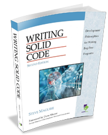

More Assertions

Assertions are not designed to handle runtime errors. They are designed to point out bugs in your code. Steve Maguire, one of the original developers of Excel, wrote a classic book named Writing Solid Code, which contains a chapter on assertions in C. Here are the points he makes:
- Assertions are shorthand way to write debugging checks
- Use assertions to check for illegal conditions, not error conditions
- Use assertions to validate function arguments under your control
- Use assertions to validate any assumptions you have made
If you want your code to help you find your bugs, make liberal use of assert().
Since assertions are only needed while you are developing your code, you can remove them from your production build by compiling with the -D NDEBUG compiler switch, or by adding #define NDEBUG before including <cassert>.
assert() is not actually a function, but a preprocessor macro, so defining NDEBUG allows the preprocessor to remove all assert() statements before your code is compiled. Becuase of this, you need to make sure that an assert() never has a side effect, which could change the way your program runs when it is removed.
Static Asserts
C++ 11 also introduced the static_assert() declaration which may be used to double-check your assumptions about the platform you are developing on. For instance, if your code assumes that the int type is a 32-bit signed number, you can check that with:
static_assert(sizeof(int) == 4, "int must be 32 bits.");Unlike regular assertions, static_assert is checked when you compile; it does not check for runtime errors. You can only check on compile-time constants and the error message must be a string literal; you cannot include variables. (In C++17 you may omit the error message.)
 This course content is offered under a
CC
Attribution Non-Commercial license. Content in this course
can be considered under this license unless otherwise noted.
This course content is offered under a
CC
Attribution Non-Commercial license. Content in this course
can be considered under this license unless otherwise noted.